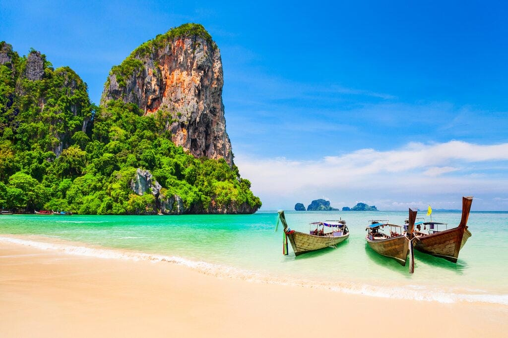
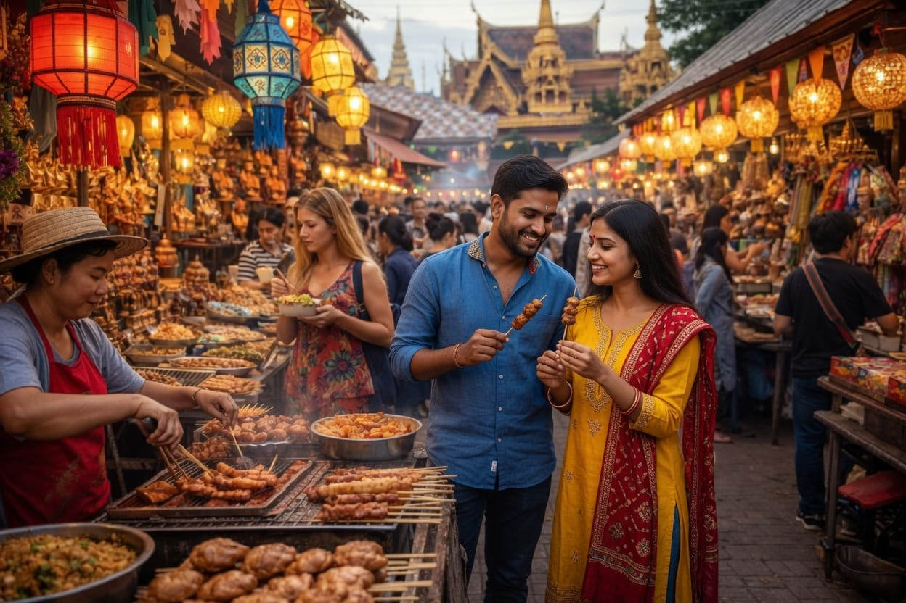
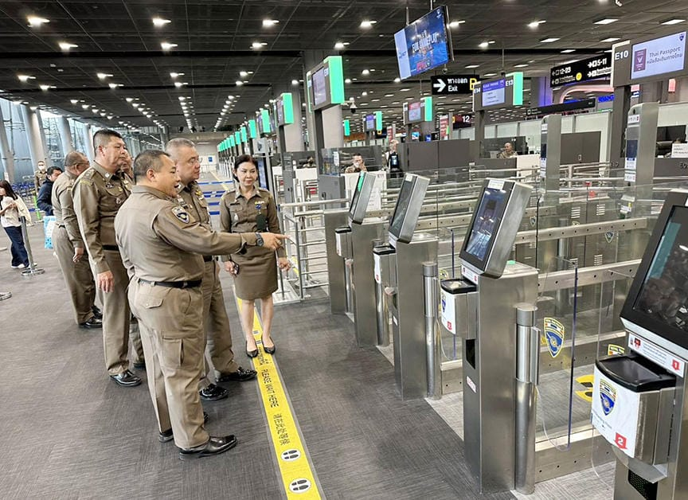
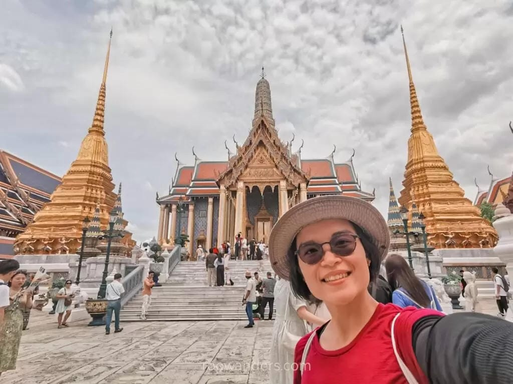
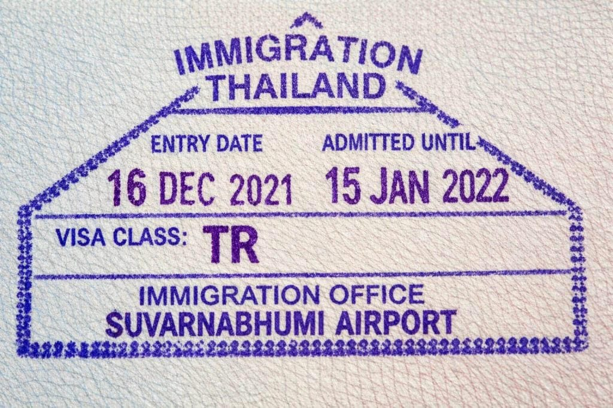
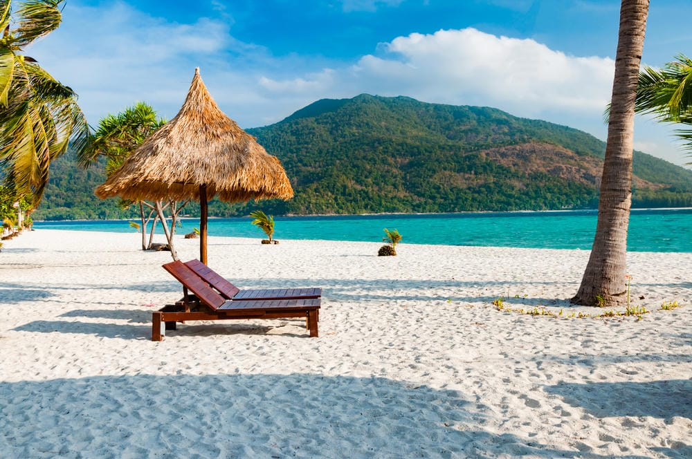
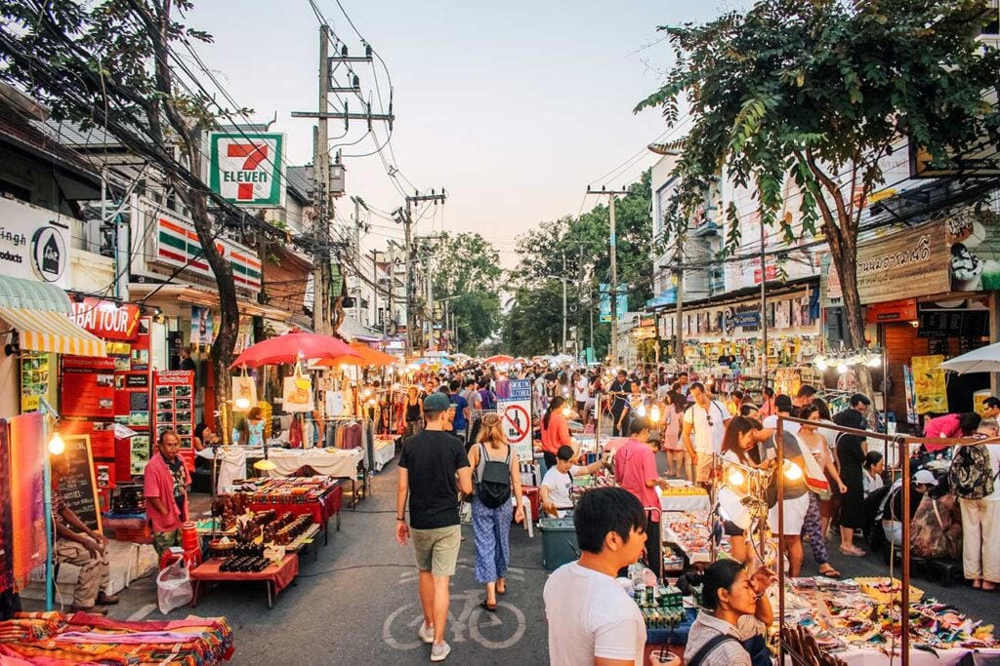

News • Travel & Visas • Official Policy Update
Thailand Revises Visa Rules for Indian Travelers: 30-Day Visa-Free Entry Returns
Published 16 July 2026 • 5 min read

Thailand has re-opened the door for Indian tourists. After scrapping its 60-day visa exemption in May and pushing Indian visitors onto visa-on-arrival, the Thai Cabinet has now approved a return to visa-free entry — this time capped at 30 days. It's a smaller welcome mat than before, but for the millions of Indians who make Thailand their go-to holiday, the paperwork is gone again.

Indian travelers on Thailand's street-food circuit — the kind of short leisure trip the new 30-day rule is built around.
What changed in May
Earlier this year Thailand withdrew the generous 60-day visa exemption it had extended to travelers from 93 countries and territories, India among them. Cabinet ministers said the longer window had been abused in ways that broke immigration rules and raised security concerns. Indian visitors were rerouted to the visa-on-arrival (VoA) channel — and the effect was immediate.
According to Thailand's Ministry of Tourism and Sports, arrivals from India fell by nearly 20 percent in the months that followed. Tourism operators said the extra step added friction for leisure travelers who had been used to walking straight through.

E-gates at Suvarnabhumi. Every tweak to visa policy lands here first — at the arrivals hall.
The new 30-day framework
In its latest decision, the Cabinet extended visa-free entry of up to 30 days to nationals of 59 countries. India joins the list alongside Bulgaria, Croatia, Cyprus, Malta and the Maldives, and the revision standardizes treatment across all 27 European Union member states so EU travelers get consistent benefits.
For Indians specifically, it means no more visa-on-arrival for any stay inside the 30-day limit — a real simplification for anyone planning a short holiday around Thailand's beaches, cities and temples.

Bangkok's Grand Palace — a fixed stop on almost every Indian itinerary.
Key highlights of the updated policy
- Visa-free restored: Indian passport holders can again enter Thailand without a visa for tourism stays of up to 30 days.
- Broader scope: the 30-day benefit now applies uniformly to 59 countries.
- EU harmonization: all 27 EU member states receive the same privileges under the revised rules.
- VoA replaced: the visa-on-arrival requirement for Indian nationals is superseded for qualifying short stays.
- Data-informed limit: the 30-day cap tracks the average Indian tourist stay of 7.2 days.

The stamp that matters — simpler to earn again for short-term visitors from India.
Why 30 days?
Thai authorities appear to have set the new window against real travel patterns. With Indian visitors typically spending just over a week per trip, a 30-day allowance leaves plenty of room for holidays, family visits and short breaks — without reopening the door to the extended or repeated stays that triggered the tightening in the first place. It's a deliberate balance between welcoming tourists and keeping immigration controls firm.

Thailand's beaches remain the main draw — average Indian stay: 7.2 days.
When it starts
The revised rules take effect 15 days after official publication in Thailand's Royal Gazette — the standard window that lets immigration officers, airlines and travelers get ready. There's also a transitional protection: anyone who enters Thailand before the new rules go live completes their stay under the conditions that applied on arrival, so no one already in transit gets caught out by a mid-trip change.

Night markets — a highlight of the short-break trips the policy is aimed at.
What it means for travelers
For Indians planning a trip, the return of visa-free entry — even at the trimmed 30-day maximum — strips out a layer of cost and hassle tied to visa-on-arrival processing. Expect it to nudge more spontaneous short holidays, and to help Thailand claw back momentum with one of its most important source markets.